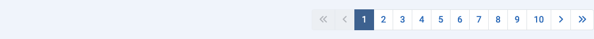

Doel¶
De meeste componenten hebben lijstweergaven die items uit de database weergeven. Er kunnen honderden items zijn, misschien wel duizenden of zelfs miljoenen. De standaard Lijstlimiet, het aantal items dat op een pagina met resultaten wordt weergegeven, is meestal 20. Onder elke pagina met resultaten, als er meer resultaten zijn dan de huidige limiet, vind je een Paginering balk:

Met het eerste nummer in de Paginering balk geselecteerd, worden de eerste 20 resultaten weergegeven in de lijst, of welk aantal resultaten de Lijstlimiet ook is ingesteld. Selecteer het volgende nummer of het Volgende icoon () om naar de volgende pagina met items te gaan.
Het maximale aantal pagina's dat in een enkele paginering balk wordt weergegeven is 10. Echter, paginanummers onder en boven de huidige pagina worden weergegeven om eenvoudig een pagina voort of terug te kunnen gaan.
Hier is een screenshot van de Plug-ins lijst die naar Pagina 10 is gegaan met de Lijstlimiet ingesteld op 5:

De Iconen
- Ga naar de Eerste pagina.
- Ga naar de Vorige pagina.
- Ga naar de Volgende pagina.
- Ga naar de Laatste pagina.
Op pagina één zijn de iconen voor de Eerste pagina en Vorige pagina uitgeschakeld. Op de laatste pagina zijn de iconen voor de Volgende pagina en Laatste pagina uitgeschakeld.
Vertaald door openai.com